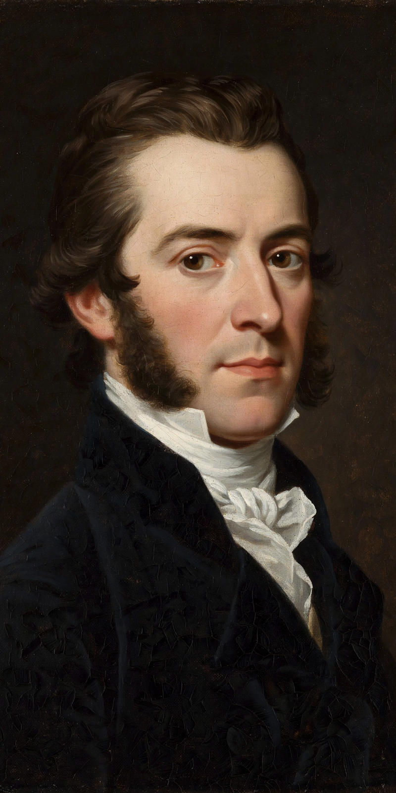

Gustave de Beaumont
| Gustave de Beaumont | |
|---|---|
 | |
| Born | 6 February 1802 Beaumont-la-Chartre, France |
| Died | 30 March 1866 (aged 64) Tours, France |
| Occupation | Writer, magistrate, politician |
| Known for | Marie, ou l'esclavage aux États-Unis; travels with Alexis de Tocqueville |
Gustave Auguste Bonnin de la Bonninière, comte de Beaumont (6 February 1802 – 30 March 1866) was a French magistrate, prison reformer, writer and politician. He is best known as the travelling companion of Alexis de Tocqueville, with whom he journeyed through the United States in 1831–1832.
Life
Beaumont was born at Beaumont-la-Chartre in the Sarthe into an old aristocratic family. He studied law in Paris and became a deputy public prosecutor at Versailles. In 1831 the French government commissioned Beaumont and Tocqueville to study the American penitentiary system. The two friends spent nine months travelling across the United States, interviewing officials and citizens and gathering the material that underpinned both men's later fame.
Works
On their return the pair published Du système pénitentiaire aux États-Unis et de son application en France (1833), which won the Prix Montyon of the Académie française. Beaumont then wrote Marie, ou l'esclavage aux États-Unis (1835), a novel framed around the American journey that contained a penetrating analysis of slavery and race relations — in some respects going further than Tocqueville's Democracy in America. He later wrote L’Irlande sociale, politique et religieuse (1839), a study of Ireland's poverty and British rule, and edited the works of Tocqueville after his friend's death in 1859.
Political career
Beaumont sat in the Chamber of Deputies from 1839, representing Mamers, and served as French ambassador to London and Vienna during the Second Republic of 1848–49. Opposed to the coup d'état of Louis-Napoléon Bonaparte, he withdrew from public life under the Second Empire and devoted himself to editing Tocqueville's writings. He died at Tours in 1866.